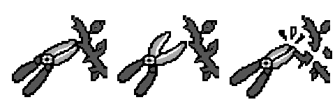

Welt 1 – Der Abenteuerwald
Medien dieser Welt: Werkzeuge, Umgebungen, Levelereignisse und ihre visuellen sowie akustischen Darstellungen. Die Gartenschere dient als erster gemeinsamer WIP-Test aus Grafik und Sound.
Werkzeug: Gartenschere – Schnittaktion
Beispiel für die gemeinsame Darstellung von Sprite, Animation und zugehörigem Sound. Die Grafik ist eine eigens erstellte Platzhalter-Vorschau und noch kein freigegebener finaler Spiel-Sprite.

Falls die Vorschau auf deinem Gerät nicht direkt erscheint: Beispielgrafik separat öffnen.
Grafik / Sprite: WIP – Beispielbild
Sound: Vorhanden – ausgewählter Schnipp-Sound
Zuordnung: Vorschlag – gemeinsam noch bestätigen
Vorgeschlagene Zuordnung: Der kurze „Schnipp“-Klang wird beim tatsächlichen Durchtrennen des Gestrüpps abgespielt, nicht schon beim bloßen Ausholen.
Axt – Ausholen Whoosh
Luftiges Zischen beim Schwingen.
Axt – Treffer Tok-Krrk
Knackiger Holzimpuls beim tatsächlichen Treffer.
Seil – Zug und Plopp
Bisheriger kurzer Einsatzklang.
Schaufel – Einsatz
Dumpfer, weicher Einsatzklang.